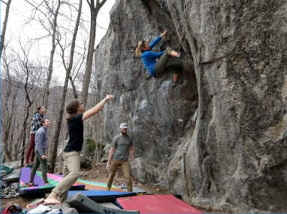
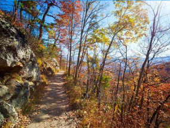
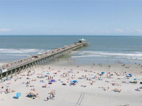

What We Do
At OREC, students plan different activities for all of the land, rock, and water experiences. Here are some examples of the types of Adventure Trips students can participate in.
Bouldering at Rumbling Bald
Every semester, OREC brings students to the Rumbling Bald bouldering field in Chimney Rock State Park. Here participants can find dozens of boulders fit for beginners and experts.

Backpacking The Appalachain Trail
At the end of the school year, OREC takes out students who want an extreme challenge outdoors hiking about 40 miles along the world famous Appalachian Trial for 5 days.

Surfing at Folly Beach
In both the Fall and Spring, OREC takes students to Folly Beach on the South Carolina coast to learn the basics of surfing in one of the most sought after locations for surfing in South Carolina.
